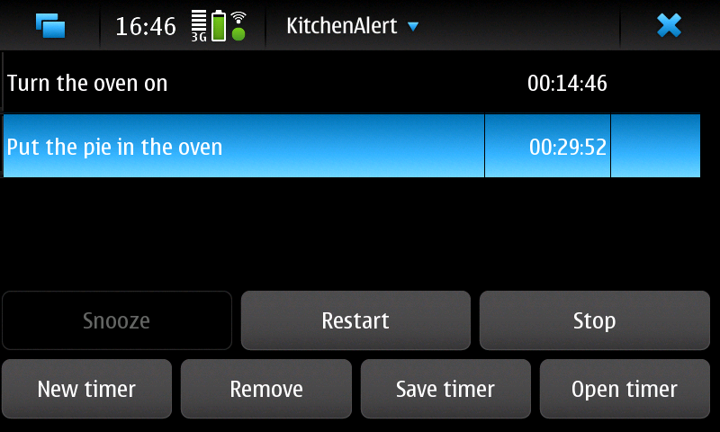

KitchenAlert for Maemo
|
|
KitchenAlert
is a timer application for maemo5 (in practise Nokia's N900 device),
designed to suite especially cooking and baking purposes. A new
version (0.3.0) is now available.
KitchenAlert obeys the volume setting of the device. It is highly
recommended to test whether you can hear the alert from where you will
be keeping your phone before actually using it to alert you of
something. During phone calls all alerts are omitted.
|
|  |
Features
and bugs
Multiple
timers can be run simultaneously. Timers can be saved.
The
alarm
sound
can
be set
by the user. Any sound file type supported by the platform (e.g. mp3,
vaw, aac (used in ringtones)) can be used. If you want to use an .ogg
file, you need to have the package ogg-support
installed on your N900.
You can even set an mp4 video as the alert sound, and the program will
use its audio stripe.
A default alarm sound is also provided. The current one is modified
from a public
domain doorbell
ring. The
loudness of
the default sound is chosen on basis of not hurting your ears if using
headphones at high volume. On noisy situations a louder sound may be
needed.
The
alert sound
is treated as belonging to the group "alarm" by the system. Actual
behavior will depend on the settings for this group. With a freshly
installed PR 1.3 global image, the alarm is played even if the silent
mode is on. Also, it plays at lower volume on top of music
when mediaplayer is playing. With loud music, the alarm may not be
audible.
The
application sometimes auto-minimizes itself when the device is
unlocked. Sometimes the "stop" button needs to be pressed twice to
silence an alert (the first one stops it, but the sound keeps playing).
Running several timers for several hours risks draining
your battery.
The sound system of the device is restarted during install/update.
Should the restart fail for any reason the device would be left
completely mute. Restarting the device will restore the sounds.
|
New
in version 0.3.0
- saving and loading of timers
in version 0.2.1
- the
alert sound can again be changed even if there are no alerts in the
list
in version 0.2.0
- improved
and finger-friendlier user interface
- removing
alerts from the list is now possible
- the
alert sound is now played also when MediaPlayer is playing. (Loud alert
sound may be needed for hearing it over the music, though.)
- alert
sound no longer jams when several timers alert close to each other
- stopping
one alert no longer silences all alerts
- zero
second alerts alert now
- a
new default sound and a new desktop icon
|
Download
You can
install
KitchenAlert on your N900 from the extras-devel
repository. However, as
usual for
this repositories, it's not necessarily safe: keep in mind
the above cautions on volume and battery drain. Remember to close
the repository after installing to
avoid unwanted updating of your applications to development versions.
Bug reports and feature requests are welcome on the application's garage project
page.
|
©
Heli Hyvättinen 2010-2011. KitchenAlert is free software under GNU
General Public License 3.
|